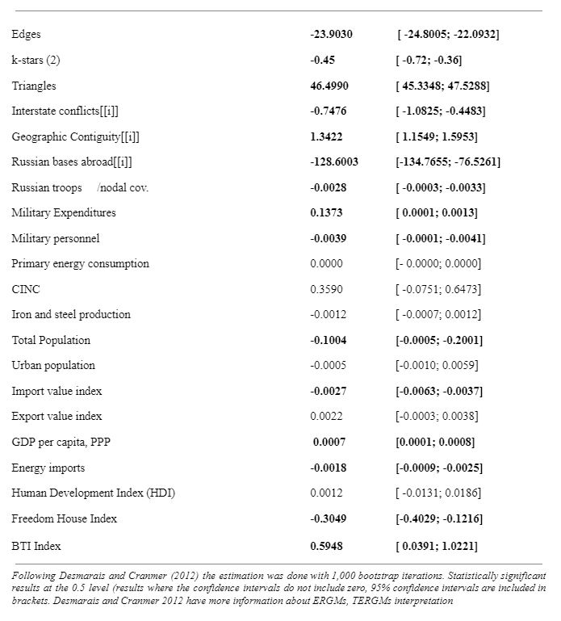

Summary
States form military alliances to strengthen their security from potential threats or conflicts. They build an interconnected military alliance network and link through a complex web of relations. However, conflicts can also alter these connections and impair alliance structures. I examine the effects of conflicts on alliance structures by focusing on the post-Soviet region. Conducting a network analysis based on the temporal exponential random graph model (TERGM), I found that conflicts, such as Russo-Georgian War in 2008, the Annexation of Crimea by Russia in 2014 and the Nagorno Karabakh war in 2020 had debilitating effects on the alliance structures of the post-Soviet region. In addition to conflicts the empirical analysis revealed that the presence of Russian bases in some of the post-Soviet states also decreased the likelihood of alliance formation.
Introduction
Literature suggests that states form military alliances to counter threats, strengthen their security, and facilitate peace (Kim 1991; Maoz et al. 2006). However, major wars have the ability to restructure the international system (Gilpin 1981), shift state interests (Maoz 2016), impact domestic political institutions (Chiozza and Goemans 2004), and radically change economic development (Organski and Kugler 1980). While international wars have the capacity to impact several states and restructure global networks, our understanding of small-scale conflicts and their effects on regional dynamics is still limited.
The intrinsic complexity of state behavior presents challenges in explaining conflicts and alliance dynamics in depth. Despite the long history of alliance formation, alliances have mostly been examined through the lens of bilateral relations, as a dyadic phenomenon. While dyadic connections are the fundamental factor for examining state alignment, a two-fold analysis might not account for the complex interdependencies that impact state behavior. Considering that the connectivity of regional networks may be a significant determinant of state alignment, I test the empirical implications of conflicts on regional network structures using covariate measures at the network level. In this regard, I hypothesize that regional dynamics, or more specifically, conflicts, decrease the likelihood of alliance formation. In other words, states account for regional developments when shaping their behavior. While there is a lot of theoretical work examining state alignment and conflicts, there aren’t as many empirical studies focusing on the impact of interstate disputes on regional alliance structures.
For the analysis, I focus on the post-Soviet regions for their historic, cultural, and institutional similarities. Following the network-based theory of alliance formation, I examine the impact of three conflicts on the post-Soviet alliance network: the Russo-Georgian War in 2008, the Annexation of Crimea by Russia in 2014, and the Nagorno Karabakh war in 2020. This theory allows me to capture the indirect effects of conflicts on the overall structure of the affected network and to estimate the likelihood of how conflicts affect tie formation. The theory is built on the network theory suggested by Cranmer et al. (2012). I included dyadic covariates in the analysis as well, to follow the general literature on alliance formation. This includes factors like geographic contiguity, state capabilities, trade dependencies and political compatibility. Considering Russia’s position in the region, I also account for Russian power projection or the impact for Russian bases located in the post-Soviet region.
Against this backdrop, the study analyzes alliance formation in a regional context. It is organized into three main chapters. The first is devoted to general alliance literature and how alliance formation is explained by different scholars. The second chapter addresses the theoretical framework of the network-based theory of alliance formation. The third chapter focuses on an empirical analysis that includes the context, method, and the analysis of the results. The concluding chapter discusses the main findings of this study.
Literature Review
The likelihood of political groups to ally goes back to the earliest human settlements and definitively predates states by not less than two millennia (Touchstone 1998). The formation of alliances between modern states is multifaceted: states form alliances to safeguard from a common threat, to increase their security, as well as to facilitate peace among possible rivals (Kim 1991; Maoz et al. 2006). However, in spite of the long history of alliance formation, the impact of different factors influencing the structure of alliances remains poorly understood. So instead of examining alliances through dyadic dependencies that might exist between states, I consider the network-based theory as a foundation to determine alliance causality.
While the network-based theory focuses on larger network structures of alliances, the basic component of alliance relations are still dyad level determinants. As a result, a network analysis also looks at dyad level attributes of alliances: essentially political fellowship and capability aggregation. Presuming that a formed alliance is reliable, states might benefit from it in different ways. Neorealists for instance suggested that alliances can be especially beneficial for states that have a common enemy (Walt 1987). Some researchers have found empirical support for this argument (Gibler and Wolford 2006; Lai and Reiter 2000). Alliances have also been considered as a framework of capability aggregation over states to expand collective security (Liberman 1996; Altfeld 1984; Morrow 1993; Walt 1987; Waltz 1979). Morrow (1994) found that the increase in power through alliances impacted a state’s ability for deterrence (the ability to bargain in crises), although, it might be questionable to what extent alliances increase the military power of their members (Brooks 1997). Powell (1999) and Walt (1987) found that alliances facilitate balancing between competing powers.
Nonetheless, as beneficial as alliances might be, they also produce costs. This includes the limitation of available actions and, to a certain degree, also the loss of autonomy (Morrow 1987; Altfeld 1984). Another potential cost that states might be forced to pay after joining an alliance is that they might be tied to a conflict in which they would not wish to participate. In some cases, alliances might also be a means of diffusing war (Siverson and King 1980; Siverson and Tennefoss 1984). Yet, the greatest possible cost of joining an alliance is that a new member might be tied into a war in which it has no interest to participate. Some researchers suggest that alliance members are more likely to be drawn into a war, especially if the alliance is new, defensive, with smaller capabilities and other allies are already involved in a conflict (Siverson and King 1980). Furthermore, alliance members with close proximity to a conflict, in addition to opportunity and willingness are far more likely to engage in war (Siverson and Starr 1990).
When considering how states choose their allies, different factors need to be accounted for. For instance, political tensions or enemies can be a driving factor for states to ally. Given that few states have the capability for long-time power projection, establishing good relations with neighboring countries might be beneficial for resolving local disputes (Gibler and Vasquez 1998). At the same time, states that have unresolved conflicts or are likely to engage in conflict might not have the motivation to ally unless they face a common threat, in which case they might put aside their differences to neutralize the common enemy (Lai and Reiter 2000; Walt 1987). In essence, conflicts can have a significant impact on state behavior.
When considering the effects of conflicts, researchers have examined major wars that have challenged the security and interests of the international system (Brecher 2008; Gilpin 1981) or have strengthened and terminated international rivalries (Diehl and Goertz 2000). For instance, the collapse of empires like the Austro-Hungarian empire in 1918, the French and British empires in the 1960s and 1950s, and the fall of the Soviet Union in the 1990s had a major impact on many states. These events have affected alliances, induced state realignments, and regime change (Maoz 2016).
Although the nature of an alliance also requires consideration, the alliances themselves have the potential to cultivate aggression and conflict. Scholars suggest that some states seek to form alliances with the prospect of engaging in conflict (Singer and Small 1967). In this respect, allies are more likely to engage in conflict, as third states will not intervene, and any foreign policy shifts in the alliance will increase the benefits for the initiator (Bueno de Mesquita et al. 1981). Ray (1990), on the other hand, argued that a positive correlation between conflict propensity and alliance ties does not equate to causation. Alliance characteristics also need to be considered in this regard; some studies have found certain alliance characteristics that have a higher propensity for conflict (Gibler 1996; Senese and Vasquez 2004; Siverson and King 1980).
Nevertheless, multivariate findings that consider state contiguity find no significant correlation between alliance formation and conflicts. In other words, joining an alliance does not necessarily increase the risk of conflict propensity (Reed 2000; Russett and Oneal 2001; Clark and Regan 2003). On the other hand, do conflicts conversely increase the likelihood of alliance formation?
When considering possible explanations for how states ally, a certain extent of political compatibility and state capability seems relevant. Waltz (1979) for instance, points out that both alliances and conflicts could be caused due to the changes in capabilities, so that states might engage in one of these processes (conflict or alliance formation) with regard to these changes. The effects of military capabilities on alliance formation have been examined in different ways, in the context of alliance formation and major powers (Levy 1983), changes of military capabilities across alliances leading to conflicts (Kim 1989), and changes in military capabilities causing tie loss or alliance termination (Leeds and Savun 2004; Morrow 1991). These effects might be explained by the trade-offs that states might make by joining. As one state might become increasingly dominant within the alliance, others might in contrast rely increasingly on other allies for military capabilities. In this context, alliance formation is less likely when the costs are too high - for states would rather gain from joining an alliance than develop security dependencies (Kimball 2010). However, this does not account for other factors, like a general threat that would increase the costs of not joining an alliance.
Another important component in the alliance literature is the commitment to the credibility or the reliability of alliances (Morrow 1994; Fearon 1997; Leeds 2003). Allies might desert or leave a partner in their time of need (Snyder 1984). This is related to the issue of the power imbalance between allies. Stronger partners might fear exploitation for providing an overly disproportionate portion of military resources to allies. For example, the Robert Gates, the former American Secretary of Defense, made concerning statements about the reduced defense spending of the European partners in the North Atlantic Treaty Organization (NATO):
“But some two decades after the collapse of the Berlin Wall, the U.S. share of NATO defense spending has now risen to more than 75 percent – at a time when politically painful budget and benefit cuts are being considered at home. The blunt reality is that there will be dwindling appetite and patience in the U.S. Congress – and in the American body politic writ large – to expend increasingly precious funds on behalf of nations that are apparently unwilling to devote the necessary resources or make the necessary changes to be serious and capable partners in their own defense. Nations apparently willing and eager for American taxpayers to assume the growing security burden left by reductions in European defense budgets.” (Horowitz 2017)
Provided that allies fear being exploited, alliance members might need to signal their eagerness to become responsible partners, especially in the formation phase (Palmer and Souchet 1994; Olsen and Zeckhauser 1967). This includes several measures that indicate a state’s “worthiness” as a partner - expanding defense spending, growing military size, developing and displaying military technology, as well as mobilizing troops (Slantchev 2011). One instance comes from the hesitancy of the British Joint Chiefs to ally with the Soviet Union in 1939. During a cabinet meeting on March 18, it was assumed that the Soviet Union would not be able to fight outside its borders due to its troop's “uncertain quantity” (Manne 1974). Thus, the British were unwilling to ally because of the quantity and lack of proximity. In this context, signaling the level of state capabilities can be significant in explaining state behavior (Reiter 2003).
States can signal their military might through different means, one of which is their recruitment policies. States either recruit personnel to the military through conscription or voluntarily by offering some inducements to joining. Conscription allows states to have a larger number of active reserves or trained reserves that can become active reserves. A good example of a state-changing to conscription-based recruitment as a result of external threats was the United Kingdom during World War I, after the forces based on volunteers were reduced in number, they shifted to a conscripted army (Dewey 1984). Conscription also allows states to draw from a larger number of military reserves. Horowitz (2017) also suggests that states, which have changed to conscription have a higher likelihood of forming alliances and that conscription signal reliability in terms of alliance contribution.
Another important factor in alliance formation is a certain level of political compatibility - ideological, normative, and cultural similarities. In that regard, researchers have suggested that democratic states are more likely to ally (Siverson and Emmons 1991; Lai and Reiter 2000; Warren 2010). Others criticize this notion and consider alliance formation based on regime similarity a heritage of the Cold War (Simon and Gartzke 1996; Gibler and Wolford 2006). Nevertheless, alliances can indicate a convergence of mutual interests (Lemke and Reed 1996) and mirror similarities between political institutions and cultural norms (Simon and Gartzke 1996). Some scholars argue that cooperation between allies can over time lead to shared institutional structures that might provide mechanisms to avoid war (Bennet and Stam 2004). However, one of the potential factors that might reduce the effects of political compatibility may be political tension or a common enemy (Lai and Reiter 2000).
As such, at the basic level, joining an alliance can indicate an intention to develop peaceful relations and possibly to gain military support. The notion that alliance formation indicates peaceful intentions have been supported by Long et al. (2007). They found that the likelihood of long-term peace between states increases when they join an alliance. Realist and game theoretic approaches support the idea that alliances denote valid measures of a state’s perceived probability of conflict with allied partners (Walt 1985; Morrow 2001). In addition, Fearon (1997) argues that alliances reflect the foreign policy interests of states in this respect, states will be forced to act in compliance with their partners. Although states have far more incentives for joining an alliance I consider these simple signals of expectations and intentions to be a basic communicative character of alliances.
At the same time, state behavior and decisions can also be influenced through the regime of a state (Maoz and Russet 1993; Russett 1993). Similarly, revolutions can seriously impact alliances (Walt 1992; Maoz 1989; Colgan 2013). When considering which country to ally with, a certain degree of political compatibility can be an attractive factor for potential allies for the following reasons:
First, states may choose to ally with states closer to them in terms of ideology, norms and culture. In this context, Simon and Gartzke (1996) found that alliances mirror commonalities of culture, norms and political institutions.
Second, alliances can over time create similarities between states.
Bennett and Stam (2004) have expanded this notion and they suggest that collaboration through alliances can over time develop shared institutional structures, which will provide incentives to avoid conflict.
Furthermore, political norms like democracy have the likelihood to cluster (Gleditsch and Ward 2006). According to Gleditsch and Ward (2006), diffusion processes between states influence the dissemination of democracy in the international system. They also find a strong interconnection between a state’s institutions and the convergence of democracy in the neighboring region. Moreover, alliances with democracies have been seen as more credible because of the greater public accountability of democratic states and therefore less likely to withdraw from public and formal commitments (Leeds 1999). Since democracies are also more transparent, they are given more credibility as potential alliance partners (Lipson 2003). This notion suggests that more democratic regimes are more likely to form an alliance with each other than authoritarian regimes. Following this logic, Horowitz (2015) suggests that similarly authoritarian regimes are more likely to ally with democratic than authoritarian regimes, due to the higher credibility of democratic regimes.
The ideological regime type literature, on the other hand, emphasizes the fusion of political institutions with the ideological values and policy ambitions of states (Moravcsik 1997). In this sense, Aron (1973) explains that the international system is characterized by states with similar and different preferences. Considering that democratic norm diffusion could have spillover effects for authoritarian regimes, authoritarian regimes might be skeptical of forming alliances with democracies.
Considering that trade policies align with the national security interests of the state, the alliance literature also accounts for dyadic trade. As such, alliances facilitate trade flows while political tensions cause trade restrictions (Gowa 1994; Long 2003; Gowa and Mansfield 2004). Alliances and trade flows are linked in two ways. First, alliances guide “security externalities'' that derive from trade flows, which also influence trade policies toward other states. On the other hand, alliances decrease the possibility of conflict between states and therefore produce a more opportunistic environment for companies (Haim 2016).
Additionally, Gowa and Mansfield (1993) suggest that indirect dyadic relationships also have effects on trade flows. For instance, during the Cold War, the United States encouraged trade with states aligned with the Western bloc, whereas in the case of the Soviet block - the highest tariffs (in the history of the US) were implemented on imports for Soviet states (Gowa 1994). Nevertheless, empirical research confirms that trade has a reducing effect on conflicts (Oneal and Ray 1997; Oneal and Russett 1997).
Interdependent trade between powerful states reduces the probability of militarized disputes (Oneal and Russett 1999). However, when it comes to alliances, researchers have found that powerful states tend to form alliances with smaller states. As Morrow (1991) found 48% (78 of 164 alliances) of all alliances formed from 1816 to 1965 were between powerful and smaller states. Similarly, the dyadic defense alliances included in the Alliance Treaty Obligations and Provisions (ATOP) data from 1815 to 1944 differentiate 47% of partnerships between minor and major powers.
Although alliances are generally understood as a means to aggregate military capabilities, in the face of a common threat a minor state’s military contributions would not be enough to compensate a more powerful partner, considering the risks of military involvement.
Fordham (2010) explains this as a mechanism for securing commercial relationships against alterations that may be caused due to domestic or external conflicts. In this context, major states form alliances with minor states to secure the safety of valuable trade connections.
Allying with a minor state can also help prevent interference from third-party states, as they might try altering trade relations through conflict or diplomacy. For instance, Iraq's invasion of Kuwait in 1990 raised concerns for the United States about the possible repercussions of Saddam Hussein’s regional ambitions for US trade relations and the access to Saudi Arabia (oil trade). These considerations resulted in new safety commitments in the region. Civil wars can equally impact trade relations. For instance, the 1959 revolution in Cuba essentially ended trade relations with the US. Afterward, the United States used direct military intervention and foreign aid to promote US trade interests in Latin American states - to prevent the recurrence of the Cuban revolution (Fordham 2010).
Network-Based Theory Of Alliance Formation
Given that formal alliances are known to the public, it is reasonable to presume that states are aware of existing alliances between one another. Although secret alliances might also exist, states might not be aware of their existence. Therefore, considering alliances as a reflection of the orientation between states and that each state is well aware of other alliances, a complex structure emerges from the system of different alliances.
Early works have referred to the idea that system polarity can cause clustering in alliances (Li and Thompson 1978). Also, network attributes like similar regimes, more specifically democracies, have a higher probability of allying to one another - thus creating democratic clusters in alliance networks (Siverson and Emmons 1991). However, a complete network perspective was only considered later after the work of Maoz et al (2006), which suggested the “structural balance” concept in conflict and alliance ties. Maoz et al. (2007) analyzed the triadic phenomenon of third-party states intervening in interstate conflicts and later on Warren (2010) suggested that the “the triadic patterns of amity and enmity exercise powerful influence over the selection of alliance partners and the evolution of the global alliance network”. Later, Cranmer et al. (2012) found that the evolution of alliances at any point in time depends on the network’s structure.
Additionally strategic interactions have been suggested to be interdependent on alliance decisions. This approach has allowed Weihuas et al. (2017) to find that even indirect alliances can foster peace between states up to a three-degree of separation. Meaning dyadic relationships embedded in international networks can influence even states that are not directly or formally connected. Additionally, Warren (2007) investigated “friend of the enemy” and “friend of friend” ties that impact alliance formation and continuity. Cranmer, Desmarais, and Kirkland (2012) conceptualized alliances as a complex network to measure dependencies within the system.
Before describing the network-based theory for this analysis, it is necessary to mention that by theory the network-based approach refers to the alliance network structure as a crucial component for the analysis. In this regard, network structures impact states and conversely states impact the network structure. As I discussed in the previous chapter, generally the alliance literature has theorized state-level attributes as key factors in alliance formation and I too will consider them in the analysis, but without disregarding the broader network structures.
In essence, the main concept of the network-based theory is rooted in the idea of the “synergy” effects (Cranmer 2012). In general terms, “synergy” effects draw from the concept of network endogeneity and suggest that an alliance community between states provides a higher utility than the sum of a state’s dyadic relationships would indicate. In other words, a dense connected community of states might offer better security than the sum of multiple dyadic connections.
Similarly, alliances can be seen as stronger than simply the sum of their dyads that manifests into conflict support, honoring agreements, when states become connected. At the basic level “synergy” effects can be viewed in terms of triangle closure. Triangle closure takes place when unallied states that share a connection to a third allied state decide to form an alliance. This suggests that if one of these states is attacked and asks for support from the allies, it will not just increase the likelihood of the allies acting, but also the likelihood of them acting together. Essentially, a connected alliance offers the benefit of coordination in contrast to several separated but unconnected alliances.
The utility increases therefore with a connected alliance, a besieged state will receive more military support than it would in the case of several unconnected alliances. This idea is also embedded in Snyder’s (1997) theory of alliance formation.
Siverson and King (1980) also suggest that states are more likely to support allies in a conflict if other allies also support them. In other words, an alliance that might cause a triadic closure would be more beneficial for potential allies, therefore it would increase the utility in comparison to simply a dyadic alliance.
Besides enabling a broader consideration of different attributes affecting alliance relations. The network-based approach also offers the possibility of examining states embedded in its regional structure. The regional structure refers to a state that is clustered into a subnetwork (community) or is closely interconnected with a certain group, which might impact state behavior. The effects of regional structures that have mostly been studied in social and biological networks, are also analyzed in alliances (Girvan and Newman 2002). States that are part of a regional community have a common interest in maintaining the status quo. Following this notion and the possibility of synergy effects, the network-based theory suggests that states have a higher likelihood to ally with strong states which have a certain degree of political compatibility.
As such, security-seeking states might not ally with stronger ones indiscriminately, they will also look for an ally that is politically compatible.
In essence, based on the security of the state, various factors can be valuable for states in choosing alliances: contiguity, capabilities, compatibility, or a combination of factors.
According to the theory, regional communities can provide means for peaceful conflict settlements, due to their dense connections. However, network structures can be undermined by opposing foreign policy interests or conflicts.
H1: Conflicts decrease the likelihood of alliance formation.
Considering that regional shifts or conflicts might alter regional structures and their distribution of power, I argue that conflicts have negative effects on alliance networks. History reveals that radical shifts in power or major events, such as World War I or World War II caused drastic changes in the global political environment. Similarly, conflicts might impact the political environment of a region. Since there is not much research examining the effects of conflicts on regional alliance structures, I focus on a single region for this analysis. It is worth mentioning that the theory has its limitations and I do not intend to explain why and when regional shifts occur. The theory only offers explanations for how a network adjusts to shifts.
For the second hypothesis, I consider the possibility of “synergy” effects through triangle closure. H2: The possibility of a triadic closure increases the likelihood of allying with potential partners.
The hypothesis implies that states that form a triadic closure increase the utility of the alliance as opposed to an alliance that is between one or two states.
Context
To capture the impact of conflicts on regional network structures, I focus on the post-Soviet region, due to the common history and cultural similarities of the states. This includes the former Union republics, Armenia, Azerbaijan, Belarus, Estonia, Georgia, Kazakhstan, Kyrgyzstan, Latvia, Lithuania, Moldova, Russia, Tajikistan, Turkmenistan, Ukraine and Uzbekistan. To put the network theory into motion, I consider the post-Soviet system right after an interstate dispute. That is when a dyadic conflict breaks out and a military battle takes place.
I start from an initial condition that interstate conflicts represent shocks to the entire region and might impact the alliance network to restructure. Following this foundation and the presumption that synergy effects exist, the network-based theory suggests that states are more likely to ally with strong ones, which have a certain degree of political compatibility. In this regard, security-seeking states might not ally with strong states indiscriminately, each state will seek an ally that is also politically compatible. Based on the security of the state, a number of factors can be valuable for states in considering an ally: contiguity, capabilities, compatibility, or a combination of factors.
To construct the post-Soviet network, I created a dynamic network considering time-frames that included periods of conflicts: Russo-Georgian War in 2008, the Russian Annexation of Crimea in 2014 , the Nagorno-Karabakh War in 2020. Although the three conflicts did not spread out in the region to affect other states directly, they might have impacted the region indirectly.
Post-Soviet Alliances
The collapse of the Soviet Union marked a new era for post-communist states and introduced new security challenges to the region. The Collective Security Treaty Organization (CSTO) was initially formed to overcome the consequences of disintegration between former post-Soviet states. It was essentially tasked with two multilateral functions: first, to facilitate the maintenance of former Soviet military structures and issues connected to sovereign post-Soviet borders; second, to support the development of state armies and facilitate regional security governance in post-Soviet Eurasia (Davidzon 2022). This included solving the problem of former Soviet military asset distribution.
Nevertheless, some of the post-Soviet republics preferred to align with the North Atlantic Treaty Organization (NATO) instead or remained neutral. For instance, Estonia, Latvia and Lithuania turned to NATO from the very beginning. Moldova, Georgia and Ukraine developed an interest in joining NATO. Turkmenistan, and with some interruptions, Uzbekistan opted for “neutrality”. Azerbaijan formed an alliance with Turkey. So in essence, only six states joined the post-Soviet security alliance - Armenia, Belarus, Kazakhstan, Kyrgyzstan, Russia, and Tajikistan.
The literature suggests that different regional security organizations have different interests and needs (Nikitina 2011). The post-Soviet alliances have been based on state objectives, more specifically, survival and prosperity (Erkomaishvili 2016). Hence, some consider the CSTO as a means to preserve ties from the Soviet legacy (Kubicek 2019). Yet from a realist perspective, the design of the alliance is hegemonic in that it entails only one large power that bandwagons smaller states (Kubicek 2019).
The Emergent Complexity Inherent in the Post-Soviet Network
Before the 2000s, CSTO was considered to have a protective integration function, however once Moscow exercised force against Georgia, this perception was undermined (Roy 2018). Russia’s action has established tension at the heart of CSTO, which solidified in 2014 in Crimea, Eastern Ukraine. These actions challenged the organizational principles of the alliance - impetuous opposition against intra-state separatism. Nevertheless, the CSTO remained disengaged during the conflicts and interpreted them as being out of its jurisdiction, except for a short incident in 2016, when Armenia complained about Russia’s sale of weapons to Azerbaijan and the CSTO’s inactivity. The non-engagement in the conflicts has been explained in different ways: due to the short organizational history of the alliance and the lack of empowerment (Frost 2009), the lack of military resources to provide in a competitive capacity (Westerlund 2013; Norberg 2013), Russia’s primal role in the alliance and thus the greatest weight in decision-making (Roy 2018).
Since 2008, Russia has tried strengthening its influence on focal policy directions of the post-Soviet region. These ambitions have been linked to the Russian Empire’s tradition “surrounded by a coalition of friendly nations” (Norberg 2013). However, the lack of an institutional structure has been obvious since the crisis in Kyrgyzstan in 2010, revealing an ambiguity in terms of interference in internal affairs. Additionally, disagreements about military cooperation have also been apparent, as was the case with Uzbekistan which terminated its membership with the CSTO in 2012 to host a US base supporting the military withdrawal from Afghanistan that opposed the CSTO treaties (Kirchner and Dominguez 2014). Similarly, Kyrgyzstan’s agreement with the US in 2001 to host a military base in Manas as a post for the Afghanistan operation was met with discontent. Later on, the closure of the Manas base was set as a prerequisite for Kyrgyzstan to join the Eurasian Economic Union (EAEU) in 2014. Thereby, the dimensions for security and economic integration were linked in the region.
With the rising concerns of NATO’s eastward expansion, the CSTO mandate was expanded in 2010 with the establishment of the Collective Operative Reaction Force (CORF), peacekeeping forces, and joint exercises. Although, they were not deployed for military interventions. In 2016, CSTO member-states also adopted the Collective Security Strategy , which specified the security threats of the alliance. The threats were associated with external aggression, threats of interference in domestic affairs and the use of “hybrid wars” and “color revolutions” as so-called technologies (Collective Security Strategy, 2016: Sect. 3). The threat perception might be connected with authoritarian members' concerns for repeating episodes of revolutions that had occurred in Georgia in 2003, Ukraine in 2004, Kyrgyzstan in 2005, Belarus in 2006, Kyrgyzstan in 2010, Moldova in 2009 and in Ukraine in 2013 to name a few.
Based on the geopolitical alignment of the region - proximity to Russia and NATO has been considered as a predictor to measure the historical and contemporary influence of ideology (Kopstein and Reilly 2000). Additionally, given that a huge number of ethnic Russians have been residing in former Soviet states, the communities they have formed expectedly contributed to post-Soviet states to bandwagon Russia or to balance against it (Huibregste 2010). Another important factor that requires consideration is energy dependence - the proportion of energy consumption met by domestic energy sources. Some post-Soviet states overcame the collapse of the Soviet Union by dependence on Russian supplies and energy. Russia has used especially energy resources (natural gas) to influence alliance choices. For instance, when Ukraine was negotiating an association agreement with the EU, Moscow offered a lower price of gas supplies and a $15-billion loan to Ukraine to sign the Customs Union deal instead.
Endogenous and Exogenous Network Effects
To specify the theoretical foundations and empirical analysis of the research, I consider endogenous network structures and exogenous effects. Given that endogenous structures play a crucial role in network generating processes (Cranmer 2012), it is necessary to examine the most basic network structures. These fundamental structures, which produce network effects, have been referred to as “k-stars” in the network literature. In its basic form, the k-star occurs as a 2-star when a dyad, or in this case, state i, shares a tie or is allied to states j and h. However, the last two states (j and h) are not allied to each other (Frank and Strauss 1986). For instance, an alliance network is formed when Russia is allied with Belarus and Pakistan, but Pakistan and Belarus are not allied with one another.
k-stars are included in the structural statistics of Exponential Random Graph Models. Essentially the star equation counts the number of k-stars that are present in the observed network to then use the number in the estimation process by putting greater weights on simulated networks which have similar or the same amount of k-stars.
In essence, k-stars can capture “preferential attachments” or “popularity effects” in network structures. In the post-Soviet network, k-stars can capture the patterns of multiple states allying with the same state. The network literature has suggested that as a network phenomenon, popularity effects can also exist in state alliances (Cranmer et al. 2011; Weihua et al. 2017).
The next endogenous structure considered was triangles. Triangles can be seen as the continuation of k-stars in network structures. Two nodes were considered more likely to ally if they were both linked to the same node. Adding connections in k-star triangles will occur (this is illustrated in Figure 2). The network literature refers to this phenomenon as “triangle closure”, which I have discussed in a previous chapter.
Regarding alliances Cranmer, et al. (2011) found empirical evidence that triangles are a significant driver in an alliance formation. The triangle phenomenon can be a desired network structure as it increases the communal security and utility of an alliance configuration.
In terms of exogenous effects, I have included several factors or covariates in the observed post-Soviet network. The main independent variable of the analysis is interstate conflicts, more specifically three conflicts: the Russo-Georgian War in 2008, the annexation of Crimea in 2014, and the Nagorno-Karabakh war in 2020. However, I have also accounted for other factors like the presence of Russian bases in several countries. In essence, apart from Uzbekistan and the three Baltic states - Latvia, Lithuania, and Estonia- Russian bases were present in the rest of the post-Soviet states in at least one of the three time points considered in this analysis. Another important factor is energy dependence. Some states in the network, like Azerbaijan, Kazakhstan, Turkmenistan, and Uzbekistan, are major energy exporters, on the other hand, the rest of the post-Soviet states have to import most of their energy sources. In addition, I have also accounted for military capabilities, trade and political compatibility.
Statistics
Statistical evaluations of networks create different challenges that might not capture the dependencies between observations (Cranmer, Desmarais, and Menninga 2012). Moreover, Cranmer and Desmarais (2011) suggest that independent statistical observations can lead to false findings of network covariate effects and compromise the validity of results. To address these challenges, I analyze the alliance network with the temporal exponential random graph model (TERGM) designed specifically for longitudinal network observation (Hanneke, Fu, and Xing 2010). The model enables the probability assessment of the observed network compared to any possible permutation of alliances in an alternative network with the same number of nodes based on the statistics of the network. The model measures the dependencies of the network as well as the covariates at the dyadic level. It uses bootstrap maximum pseudolikelihood estimation, which was developed by Desmarais and Cranmer (2012) for unbiased simulation studies.
To understand the temporal exponential random graph model, usually called TERGM, it seems important to start first with the exponential random graph model or ERGM. Since TERGM is an extension of the ERGM, it is designed to accommodate the dependencies of a network at a single point in time. Considering the statistics for a given network N, in which N is the adjacency matrix of elements (I,j), Nij = 1 is node/state I establishes a link with j, or else 0. A detailed review of these models is provided by Goodreau, Kitts, and Morris (2008b), Hunter, Handcock, Butts, Goodreau, and Morris (2008b), Cranmer and Desmarais (2011), Cranmer, Leifeld, McClurg, and Rolfe (2017), and Lusher, Koskinen, and Robins (2013).
Defensive alliances
To capture the complex structures of the post-Soviet alliance network and to illustrate the effects conflicts have on network structures, I used the Alliance Treaty Obligations and Provisions (ATOP) data set to build the post-Soviet network. The database included all multilateral and bilateral defensive alliances between 1815 and 2014. For this analysis, I only considered the ATOP data for 2008, 2014, and collected data for 2020 through official sources. With the data, I constructed three networks for every year. Where each dyad was given the value of 1 if a multilateral or bilateral defense agreement existed between the states, or else 0. Since defensive commitments are usually reciprocal, the network was considered undirected.
Conflict Data
I included the conflict data from the Militarized Interstate Disputes (MID) dataset and considered Militarized Interstate Disputes with 4 and 5 levels. The network is the regional network of the post-Soviet states for three different points in time; thus I have only included the MD data for 2008, 2014, and 2020. These years are essential for the analysis because of the conflicts that occurred during the three years – the Russo-Georgian War in 2008, the Annexation of Crimea by Russia in 2014 and the Nagorno Karabakh war in 2020. The original MID data missed data sets for 2020, so I added the Nagorno Karabakh conflict based on the interstate dispute criteria of the MID codebook. For each conflict that started during these years, the dyad of the network was coded 1 or else 0. The original MID data set came from the Correlates of War Project, from which I used version 4.01. The data sets defined interstate conflicts as cases in which the threat, use, or display of force (as well as war) of one state is explicitly directed against another government, public representative, property, official force, or the territory of another state (COW Project). The MID data separate hostility levels for interstate conflicts for each threat were associated by (a) no armed action, (b) threat to use force, (c) demonstration of force, (d) use of force, and I war. All levels of conflict were included for the three time points: 2008, 2014 and 2020.
Direct Contiguity
Next to key covariates, I also added different variables that were suggested in the alliance literature. The literature on the willingness and capabilities of states to join alliances suggests the significance to control for geographic proximity (Siverson and Starr 1990 and 1991). Considering that states seek peaceful relations first of all with their immediate neighbors to enhance their security (Gibler and Vasquez 1998), I have added a dyadic indicator of geographic contiguity. States that have a shared land border or a separation that is not more than 1.6 km of water between their borders received the value 1 and 0 otherwise. State Capabilities
Since most of the alliance literature underlines the notion of capability aggregation, I also control for the composite index of national capabilities (CINC) (Singer, Bremer and Stuckey 1972). CINC is an index that is reported annually and is composed of several variables – military expenditure, the number of military personnel, general energy consumption, iron and steel production, the number of general and urban population. In essence, CINC provides an overall measure of annual state capabilities and is a good measure to control for capabilities. As such, I have added CINC as an indicator, but additionally I have also considered the variables for military expenditure, military personnel, general energy consumption, iron and steel production, the number of general and urban population separately. Thus, I will be able to control the significance of each measurement. I collected the data from the National Material Capabilities dataset of the Correlates of War project version 4.01.
Russian Bases Abroad
To assert its presence as a regional power Russia had established military bases abroad, which strengthened Russia’s influence in its immediate neighborhood (Klein 2009). Table 1. Presents the number of Russian bases that were present in many of the post-Soviet states in 2008. Considering that the majority of the post-Soviet states did have Russian bases at some point in time, I also included a variable for Russian base presence. I collected the data from the International Institute for Strategic Studies (IISS).
Trade dependency
Following the idea that trade relationships have politically salient benefits, which can influence alliance choices (Fordham 2010) I also consider trade dependencies in the analysis. As such I included variables for the GDP per capita, export, import and energy import from the World Bank Data and the UN Comtrade repository of official international trade statistics.
Political Compatibility
I also added variables to account for political compatibility between the states. Based on the idea that similar governments are more compatible with one another (Aron 1973), I used the Freedom House Democracy Index, the BTI Political Transformation Index and the UN the Human Development Index to check for state compatibility. The annual Freedom House Democracy report indicates a country’s status based on measurements of political rights and civil liberties. The average ratings for countries that have a “Free”, “Partly Free” and “Not Free” status have been used for dyadic values. The Human Development Index (HDI) is a summary measure of different human development dimensions, including the Education Index, the Life Expectancy Index and the Gross National Index. The BTI Political Transformation Index consists of the following assessments: free election, political participation, rule of law, stateness, representation and political culture.
The Results
The model estimated the post-Soviet alliance network at three points in time – 2008, 2014, and 2020 - to capture the effects of interstate conflicts on the state ties or edges. Based on the history of the Russo-Georgian War in 2008, the Annexation of Crimea by Russia in 2014 and the Nagorno Karabakh war in 2020, the model predicted the probability of new allinaces. The results in bold are statistically significant.

Conceptualizing alliance formation as a complex network enables the measurement of falsifiable and precise dependencies in an alliance system. Suggesting that interstate conflicts decrease the likelihood of forming alliance ties, the analysis confirmed that conflicts produced debilitating effects and reduced the probability of alliance formation in the regional post-Soviet network.
Looking at the results of endogenous structures, the model suggests a negative effect of tie formation for the post-Soviet alliance network. This indicates a decreased likelihood of tie formation in the post-Soviet network, essentially reflecting a lower probability than expected. Considering the coefficients of the k-star, the statistics indicated negative significant results. Although the coefficient is somewhat small, the finding suggests that states with the most existing alliances are less 'popular' or attractive for prospective allies. Yet, the results do not allow a distinction as to whether the decreased likelihood is connected with a lower expectation of supporting an ally or a higher expectancy of getting drawn into a conflict. Additionally, 'synergy' effects positively impacted edge formation. The prospect of allying with states that already share a connection increases the utility of an alliance and makes it more advantageous.
In essence, the network analysis provided a lens through which to explore effects that would have been overlooked in a traditional dyadic analysis. Recognizing that the international system comprises diverse regions (Katzenstein 2005), each possessing unique features and characteristics that can influence alliance dynamics, it becomes evident that a dyadic analysis, devoid of consideration for network structures, would have left a crucial aspect unexplored. The findings from this study underscore the notion that interstate disputes can disrupt regional structures, leading to a reduction in alliance tendencies. Importantly, the level of connectivity between states emerges as a pertinent factor in assessing state alignment. Community structures, within this context, may wield significantly divergent effects on state behavior and alliance networks.
Follow this link for the
Altfeld, Michael A. 1984, The Decision to Ally: A Theory and Test. The Western Attitudes. International Studies Quarterly 31(4), , 423–438.
Aron, Raymond. 1973. Peace and War: A Theory of International Relations. Abridged. Garden CITy, NY: Anchor.
Balmaceda M. 2008, Energy Dependency, Politics and Corruption in theFormer Soviet Union: Russia’s Power, Oligarchs’ Profits, and Ukraine’s MissingEnergy Policy, 1995–2006. London, UK and New York, NY: Routledge,. xvii and 222 pp
Bennett, Scott, and Allan Stain. 2007. EUGene: Expected Utility Generation and Data Management Program. Latest version: 3.2, released October. Accessed June 11, 2012. http://eugenesoftware.org.
Benson B. V., 2011 Unpacking alliances: Deterrent and compellent alliances and their relationship with conflict, 1816–2000. J. Polit. 73, 1111–1127.
Brecher, Michael (2008) International political Earthquakes. Ann Arbor, MI: University of Michigan Press.
Bueno de Mesquita B., Siverson R., and Woller G. (1992) War and the fate of regimes. American Political Science Review 86(3): 638-646.
Bueno de Mesquita, Bruce; James D. Morrow, Randolph M. Siverson, and Alastair Smith. 1999. An Institutional Explanation of the Democratic Peace, American Political Science Review 93(4): 791-807.
Carr, E. H. 1947. International Relations between the Two World Wars, 1919.
Chiozza, Giaccomo and Hein E Goemans (2004) International conflict and the tenure of leaders: Is war still ex-post inefficient? American Journal of Political Science 48(3): 604-619.
Clark, David and Patrick Regan 2003. Opportunities to Fight: A statistical Technique for modeling unobservable phenomena, Journal of Conflict Resolution 47(2):270–297.
Colgan, Jeff (2013) Domestic revolutionary leaders, and international conflict. World Politics 65(4):656-690.
Cranmer SJ, Leifeld P, McClurg SD, Rolfe M (2017). “Navigating the Range of Statistical Tools for Inferential Network Analysis.” American Journal of Political Science, 61(1), 237–251. doi:10.1111/ajps.12263.
Cranmer, Skyler J., and Bruce A. Desmarais. (2011) Inferential Network Analysis with Exponential Random Graph Models. Political Analysis 19(1):66–86.
Desmarais BA, Cranmer SJ (2012c). “Statistical Mechanics of Networks: Estimation and Uncertainty.” Physica A: Statistical Mechanics and its Applications, 391(4), 1865–1876. doi:10.1016/j.physa.2011.10.018.
Dewey, P. E. 1984. "Military Recruiting and the British Labour Force during the First World War." The Historical Journal 27 (1): 199-223.
Diehl, Paul F and Gary Goertz (2000) War and Peace in International Rivalry. Ann Arbor, MI: University of Michigan Press.
Enterline, Andrew J. 1998. “Regime Changes and Interstate Conflict 1816–1992.” Political Research Quarterly 51, no. 2: 385–409.
Erkomaishvili David, 2016. One for All, Each on Its Own: Analyzing the Post-Soviet System of Collective Security. Journal of Regional Security (2016), 11:2, 81–110.
Fearon, James D. 1997. "Signaling Foreign Policy Interests: Tying Hands versus Sinking Costs." The Journal of Conflict Resolution 41 (1): 68-90.
Fordham, Benjamin 0. 2010. "Trade and Asymmetric Alliances." Journal of Peace Research 47 (6): 685-96.
Framework, 1950-92'. Paper presented at the 38th Annual Convention of the International Studies Association, Toronto, February.
Frank, Ove, and David Strauss. 1986. Markov graphs. Journal of the American Statistical Association 81(395): 832–842.
Frost, A. (2009). The collective security treaty organization, the shanghai cooperation organization, and Russia's strategic goals in Central Asia. China and Eurasia Forum Quarterly, 7(3), 83–102.
Gibler, Douglas. 1996. Alliances that never balance: The territorial settlement treaty, Conflict Management and Peace Science 16(2): 75-97.
Gibler, Douglas M., and John A. Vasquez. (1998) Uncovering the Dangerous Alliances, 1495–1980. International Studies Quarterly 42(4):785–807.
Gibler, Douglas M., and Scott Wolford. 2006. Alliances, Then Democracy: An Examination of the Relationship between Regime Type and Alliance Formationm Journal of Conflict Resolution
Gibler D. 2006. Democracy: An examination of the relationship between regime type and alliance formation. Journal of Conflict Resolution 50(1): 129–153.
Gilpin, Robert (1981) War and Change in World Politics. Cambridge University Press.
Girvan M., M. E. J. Newman, 2002. Community structure in social and biological networks. Proc. Natl. Acad. Sci. U.S.A. 99, 7821–7826.
Gleditsch, Kristian Skrede and Michael D. Ward. 2006. Diffusion and the International Context of Democratization. International Organization 60, Fall 2006, pp. 911–933.
Goldstone, Jack A. 1997. “Revolution, War, and Security.” Security Studies 6, no. 2: 127–51.
Goodreau, Kitts, and Morris (2008b), Hunter, Handcock, Butts, Goodreau, and Morris (2008b), Cranmer and Desmarais (2011), Cranmer, Leifeld, McClurg, and Rolfe (2017), and Lusher, Koskinen, and Robins (2013).
Gowa, Joanne & Edward D Mansfield (1993) Power politics and international trade. American Political Science Review 87(2): 408-420.
Gowa, Joanne (1994) Allies, Adversaries, and International Trade. Princeton, NJ: Princeton University Press.
Gowa, Joanne & Edward D Mansfield (2004) Alliances, imperfect markets, and major-power trade. International Organization 58(4): 775-805.
Gurr 1988. “War, Revolution, and the Growth of the Coercive State.” Comparative Political Studies 21, no. 1: 45.
Haim Dotan A. 2016. Alliance networks and trade: The effect of indirect political alliances on bilateral trade flows, Journal of Peace Research, May 2016, Vol. 53, No. 3, Special Issue on Networked International Politics (May 2016), pp. 472-490.
Hanneke, Steve, Wenjie Fu, and Eric P. Xing. (2010) Discrete Temporal Models of Social Networks. The Electronic Journal of Statistics 4:585–605.
Horowitz Michael C., Paul Poast, Allan C. Stam. 2017. Domestic Signaling of Commitment Credibility: Military Recruitment and Alliance Formation. Journal of Conflict Resolution, Vol. 61(8) 1682-1710.
Huibregtse, Ada. 2010. “External Intervention in Ethnic Conflict.” International Interactions 36 (3): 265–293.
Hunter DR, Handcock MS, Butts CT, Goodreau SM, Morris M (2008). “ergm: A Package to Fit, Simulate and Diagnose Exponential-Family Models for Networks.” Journal of Statistical Software, 24(3), 1–29. doi:10.18637/jss.v024.i03.
Jackson M. O., A. Watts, The evolution of social and economic networks. J. Econ. Theory 106, 2002, 265–295.
Katzenstein, P., A world of regions: Asia and Europe in the American imperium. Cornell University Press, 2005.
Keohane, Robert O., and Joseph S. Nye. 1989. Power and Interdependence, 2nd edn. Glenview, IL.
Kim W., 1991. Alliance transitions and great power war. Am. J. Polit. Sci. 35, 833–850.
Kim, Woosang, 1989. 'Power, Alliance, and Major Wars, 1816-1975', Journal of Conflict Resolution 33(2): 255-273.
Kimball, Anessa L. 2010. Political Survival, Policy Distribution, and Alliance Formation. Journal of Peace Research 47:1-13.
Kirchner, E. J., & Dominguez, R. (2014). Security governance in a comparative regional perspective. European Security, 23(2), 163–178.
Klein M. 2009. Russia’s Military Capabilities: “Great Power” Ambitions and reality. German Institute for International and Security Affairs ISSN 1863-2053.
Kopstein, Jeffrey S., and David A. Reilly. 2000. “Geographic Diffusion and the Transformation of the Post-Communist World.” World Politics 53 (1): 1–37.
Kubicek, P. (2009). The Commonwealth of Independent States: An example of failed regionalism. Review of International Studies, 35, 237–256.
Lai, Brian, and Dan Reiter. 2000. Democracy, political similarity, and international alliances, 1816–1992. Journal of Conflict Resolution 44(2): 203–227.
Leeds B. A., Do alliances deter aggression? The influence of military alliances on the initiation of militarized interstate disputes. Am. J. Polit. Sci. 47, 427–439 (2003).
Leeds, Brett Ashley & Burcu Savun, 2004. 'The Way We Were: Explaining Decisions to Terminate Alliances', paper presented at the Annual Meeting of the Midwest Political Science Association, Chicago, IL.
Leeds, Brett Ashley. 1999. Domestic political institutions, credible commitments, and international cooperation. American Journal of Political Science 43(4): 979–1002.
Lemke, Douglas, and William Reed. (1996) Regime Types and Status Quo Evaluations: Power Transition Theory and the Democratic Peace. International Interactions 22(2):143–164.
Levy, Jack S., 1983. War in the Modern Great Power System, 1495-1975. Lexington, KY: University Press of Kentucky.
Li, Richard P.Y., and William R. Thompson. (1978) The Stochastic Process of Alliance Formation Behavior. American Political Science Review 72(4):1288–1303.
Liberman, Peter. (1996) Does Conquest Pay? The Exploitation of Occupied Industrial Societies. Princeton Studies in International History and Politics.
Lipson, Charles. 2003. Reliable Partners. Princeton, NJ: Princeton University.
Long A. G., T. Nordstrom, K. Baek, Allying for peace: Treaty obligations and conflict between allies. J. Polit. 69, 1103–1117 (2007).
Long, Andrew G (2003) Defense pacts and international trade. Journal of Peace Research 40(5): 537-552.
Long, Andrew G., Timothy Nordstrom, and Kyeonghi Baek. (2007) Allying for Peace: Treaty Obligations and Conflict between Allies. Journal of Politics 69(4):1103–1117.
Lusher D, Koskinen J, Robins G (2013). Exponential Random Graph Models for Social Networks. Cambridge University Press, New York.
Manne, Robert. 1974. "The British Decision for Alliance with Russia, May 1939." Journal of Contemporary History 9:3-26.
Maoz Zeev (2016) The effects of shocks on international networks: Changes in the attributes of states and the structure of international alliance networks. Journal of Peace Research Vol.. 53(3) 292-309.
Maoz, Z., R. D. Kuperman, L. Terris, I. Talmud, Structural equivalence and international conflict: A social networks analysis. J. Conflict Resolut. 50, 664–689 (2006).
Maoz, Zeev & Bruce Russett, 1993. 'Normative and Structural Causes of Democratic Peace, 1946-1986', American Political Science Review 87(3): 624-638.
Maoz, Zeev (1989) Joining the club of nations: Political development and international conflict, 1816-1976. International Studies Quarterly 33(2): 199-231.
Maoz, Zeev, Lesley G. Terris, Ranan D. Kuperman, and Ilan Talmud. (2007) What Is the Enemy of My Enemy: Causes and Consequences of Imbalanced International Relations, 1816–2001. Journal of Politics 69(1):100–115.
Maoz, Zeev, Lesley G. Terris, Ranan D. Kuperman, and Ilan Talmud. (2006) Structural Equivalence and International Conflict, 1816–2001. A Network Analysis of Affinities and Conflict. Journal of Conflict Resolution 50(5):664–689.
Maoz, Zeev. 1989. “Joining the Club of Nations: Political Development and In[1]ternational Conflict, 1816–1976.” International Studies Quarterly 33, no. 2: 199–231.
Maoz, Zeev; Lesley G Terris, Ranan D Kuperman & Han Talmud (2006) Structural equivalence and international conflict, 1816-2001: A network analysis of affinities and conflict. Journal of Conflict Resolution 50(5): 664-689.
Metternich N. W., C. Dorff, M. Gallop, S. Weschler, M. D. Ward, Antigovernment networks in civil conflicts: How network structures affect conflictual behavior. Am. J. Polit. Sci. 57, 892–911 (2013).
Metternich N. W., C. Dorff, M. Gallop, S. Weschler, M. D. Ward, Antigovernment networks in civil conflicts: How network structures affect conflictual behavior. Am. J. Polit. Sci. 57, 892–911 (2013).
Moravcsik, Andrew. 1997. “Taking Preferences Seriously: A Liberal Theory of International Politics.” International Organization 51 (4): 513–553.
Morrow, James D (1991) Alliances and asymmetry: An alternative to the capability aggregation model of alliances. American Journal of Political Science 35(4): 904-933.
Morrow, James D. (1987) On the Theoretical Basis of a Measure of National Risk
Morrow, James D. (1993) Arms Versus Allies: Trade-Offs in the Search for Security. International Organization 47(2):207–233.
Morrow, James D. (1994) Alliances, Credibility, and Peacetime Costs. Journal of of Political Science 37(2): 33p.
Morrow, James D., 1991. Alliances and Asymmetry: An Alternative to the Capability Aggregation Model of Alliances', American Journal of Political Science 35(4): 904-933.
Romaniuk N., Competing Hegemons: EU and RussianPower Projection in the South Caucasus, Great Powers and Geopolitics, Global Power Shift, Springer International Publishing Switzerland 2015. 113p.
Olson, Mancur, and Richard Zeckhauser. 1967. "Collective Goods, Comparative Advantage, and Alliance Efficiency." In Issues of Defense Economics, edited by Roland McKean, 25-63. New York: NBER.
Oneal, John R. & Bruce Russett, 1997a. 'Escaping the War Trap: An Evaluation of the Liberal Peace Within an Expected-Utility
Oneal, John R. & James Lee Ray, 1997. 'New Tests of the Democratic Peace Controlling for Economic Interdependence, 1950-1985', Political Research Quarterly 50(4): 751-775.
Organski Abramo FK and Jacek Kugler 1980, The War Ledger. Chicago, IL: University of Chicago Press. Political Quarterly 37(4):523–544.
Palla G., A.-L. Barabási, T. Vicsek, Quantifying social group evolution. Nature 446, 664–667 (2007).
Palmer, Glenn, and Andrew Souchet. 1994. "Security, Autonomy, and Defense Burdens: The Effects of Alliance Membership in the 19th and 20th Centuries." Defense and Peace Economics 5:189-204.
Powell, Robert. 1999, In the Shadow of Power. Princeton: Princeton University Press.
Reed William 2000. A unified statistical model of conflict onset and escalation, American Journal of Political Science 44 (1): 84-93.
Reiter, Dan. 2003. Exploring the Bargaining Model of War,' Perspectives on Politics 1(1): 27-43.
Roy Allison 2018. Protective Integration and Security Policy Coordination: Comparing the SCO and CSTO. Chinese Journal of International Politics, Volume 11, Issue 3, Autumn 2018, Pages 297–338.
Russet, Bruce. 1993. Grasping the Democratic Peace: Principles for a Post-Cold War World. New York: Norton.150p.
Russett, Bruce and John Oneal 2001. Triangulating Peace: Democracy, interdependence, and International Organizations. New York: Norton.12p.
Senese, Paul and John Vasquez, 2004. Alliances, Territorial Disputes and the Probability of War: Testing for Interactions, in Paul F. Diehl, ed., The Scourge of War: New Extension on an Old Problem. Ann Arbor, MI: University of Michigan Press (189-221).
Simon, Michael W., and Erik Gartzke. 1996. "Political System Similarity and the Choice of Allies: Do Democracies Flock Together, or Do Opposites Attract?" Journal of Conflict Resolution 40 (4): 617-35.
Singer, J. David, and Melvin Small. (1967) Alliance Aggregation and the Onset of War, 1815–1945. In Quantitative International Politics: Insights and Evidence, edited by J. David Singer. New York: Free Press, pp. 247–286.
Siverson, Randolph M., and Harvey Starr. (1990) Opportunity, Willingness, and the Diffusion of War. The American Political Science Review 84(1):47–67.
Siverson, Randolph M., and Joel King. (1980) Attributes of National Alliance Membership and War Participation, 1815–1965. American Journal of Political Science 24(1):1–15.
Siverson, Randolph M., and Juliann Emmons. 1991. "Birds of a Feather: Democratic Political Systems and Alliance Choices in the Twentieth Century." Journal of Conflict Resolution 35 (2): 285-306.
Siverson, Randolph M., and Michael R. Tennefoss. (1984) Power, Alliance, and the Escalation of International Conflict, 1815–1965. American Political Science Review 78(4):1057–1069.
Skocpol, Theda. 1988. “Social Revolutions and Mass Military Mobilization.” World Politics 40, no. 2: 147–68.
Skyler J. Cranmer, Bruce A. Desmarais, Elizabeth J. Menninga. 2012 Complex Dependencies in the Alliance Network. Conflict Management and Peace Science. Vol 29(3): 279–313.
Skyler J. Cranmer, Bruce A. Desmarais, Justin H. Kirkland. 2012. Toward a Network Theory of Alliance Formation. International Interactions, 38:295–324.
Slantchev, Branislav. 2011. Military Threats: The Costs of Coercion and the Price of Peace. Cambridge, UK: Cambridge University Press
Snyder, Glenn. 1984. "The Security Dilemma in Alliance Politics." World Politics 36:461-95.
Snyder, Robert. S. 1999. “The US and Third World Revolutionary States: Understanding the Breakdown in Relations.” International Studies Quarterly 43, no. 2: 265–90.
Troitskiy, E. 2019. Dead-Letter Regimes in the Post-Soviet Space: Strategies and Communication. Global Society, 1–20. Advance online publication. doi:10.1080/13600826.2019.1700934
W. Kim, Alliance transitions and great power war. Am. J. Polit. Sci. 35, 833–850 (1991). 3. Z. Maoz, R. D. Kuperman, L. Terris, I. Talmud, Structural equivalence and international conflict: A social networks analysis. J. Conflict Resolut. 50, 664–689 (2006).
Walt, Stephen M (1992) Revolution and war. World Politics 44(3): 321-36.
Walt, Stephen M. (1985) Alliance Formation and the Balance of World Power. International Security 9(4):3–43.
Walt, Stephen M. 1987. The Origins of Alliances. Ithaca, NY: Cornell University Press.
Walt, Stephen M. 1996. Revolution and War. Ithaca, N.Y.: Cornell University Press.
Waltz, Kenneth N. 1979. Theory of International Politics. New York: Random House.
Warren, Camber. 2010. "The Geometry of Security: Modeling Interstate Alliances as Evolving Networks." Journal of Peace Research 47(6): 697-709.
Weihuas Li, Aisha E. Bradshaw, Caitlin B. Clary, Skyler J. Cranmer. 2017. A three-degree horizon of peace in the military alliance network. Science advances, 2017-03-01, Vol.3 (3)․